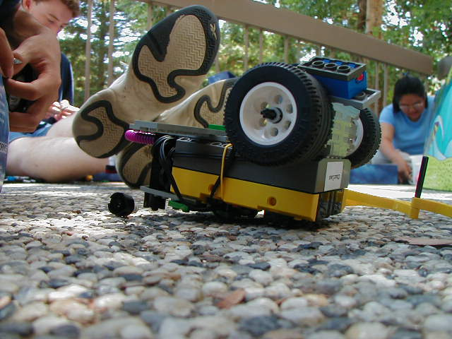

|
Computers and Robots
| COSMOS Program
| UC Davis
| Summer 2002
|
|
This course is an informal introduction to computer science using
Lego Mindstorm robots. The course teaches the basics of a first
semester college computer science course, using NQC, a variant of the
C programming language, developed for the Lego robots by Dave Baum.
Standard programming concepts covered include: variables, loops,
arithmetic functions, function calls, data/file manipulation, and
random number generation. In addition, mechanical aspects of the
robot such as the building bumpers and feelers, playing sounds,
locomotion, gears, pulleys, and communication will be covered.
Since programs for the robot are written on a personal computer
(and then downloaded to the robot via an infra-red port), students
will also learn the basics of the Unix operating system (either
Linux or OS X) running on the personal computers.
Each student in the course will be assigned their own robot for the
duration of the course.
The course is split into two week units. The first half will focus
on the basics of designing, building, and programming the robots.
During the second half, students will work on individual projects.
Last year's projects included a copy machine, an alarm clock,
a candy dispenser, and many, many sumobots. Last year's webpages
are at
http://cosmos.ucdavis.edu/websites/Cosmos_projects.html
Programming in the lab:

First designs, built out on the patio:

Stephen's basketball playing robot: